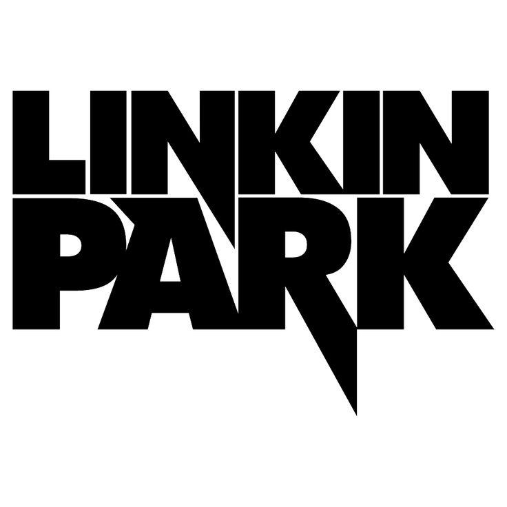
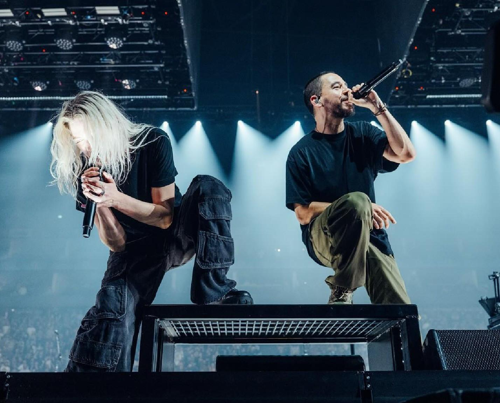

Linkin Park

Linkin Park is one of the bands I think is amazing. They became popular in the early 2000s by combining rock, alternative music, and elements of hip-hop. One of the first bands I ever listen to. My preteen years and adult year holding a very special place on my playlist. I think this is a band that has evolved alot in sound and continues to evolve Their sound everyone should listen at some point in their lifetime even if it's only once.
Some of their most popular songs include "In the End," "Numb," and "What I've Done." Their music has also appeared in movies, including the Transformers films.

Chester Bennington, the band's original lead vocalist, passed away in 2017. In 2024, Linkin Park returned with new vocalist Emily Armstrong and released new music.
My Favorite Songs
- In the End
- Numb
- What I've Done
- Faint
- Leave out all The Rest